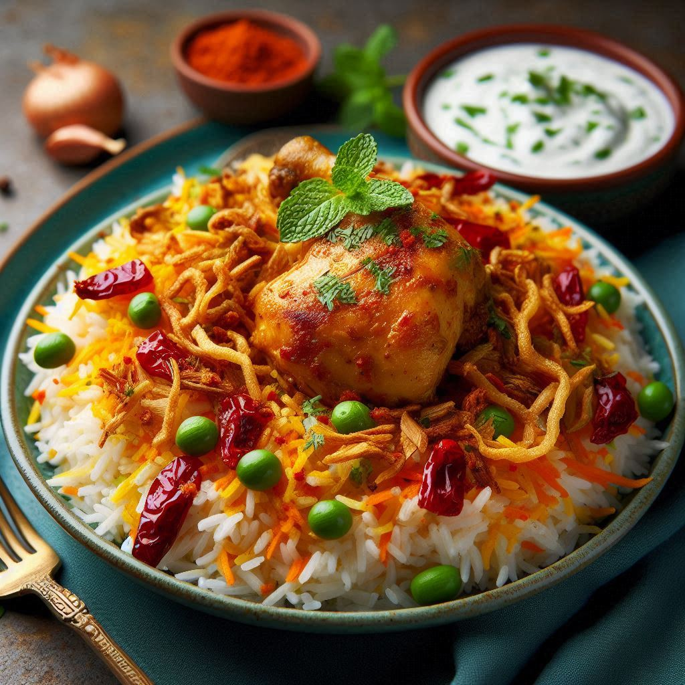
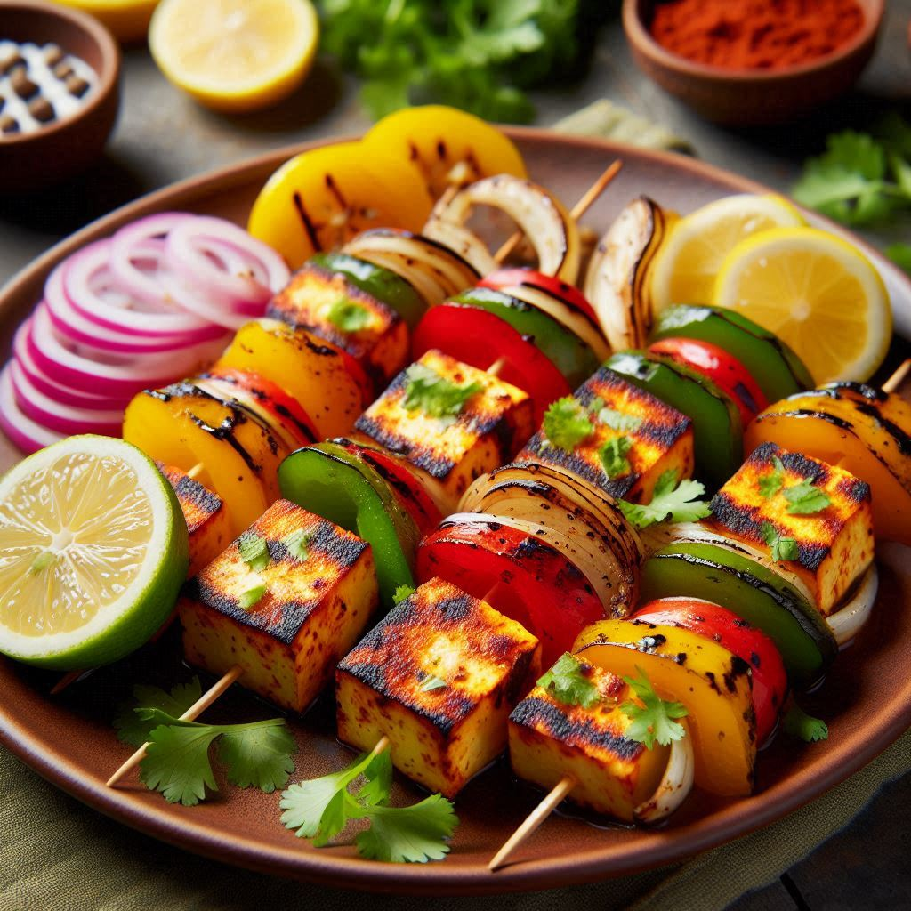

Butter Chicken
A rich and creamy dish made with tender chicken pieces cooked in a spiced tomato sauce.
- Step 1: Marinate the chicken with yogurt, lemon juice, and spices for at least 1 hour.
- Step 2: Cook the marinated chicken in a pan until fully cooked.
- Step 3: In another pan, prepare the sauce by sautéing onions, garlic, and ginger, then adding tomatoes and spices.
- Step 4: Blend the sauce until smooth, then return to the pan and add cream and butter.
- Step 5: Add the cooked chicken to the sauce and simmer for 10-15 minutes.
- Step 6: Garnish with fresh cilantro and serve with naan or rice.

Chicken Biryani
A flavorful and aromatic rice dish made with marinated chicken, basmati rice, and a blend of spices.
- Step 1: Marinate the chicken with yogurt, lemon juice, and spices for at least 2 hours.
- Step 2: Cook the marinated chicken in a pan until partially cooked.
- Step 3: In a large pot, sauté onions, garlic, and ginger until golden brown.
- Step 4: Add tomatoes and spices, and cook until the oil separates from the mixture.
- Step 5: Layer the partially cooked chicken and soaked basmati rice in the pot.
- Step 6: Add saffron-infused milk and ghee over the top.
- Step 7: Cover the pot and cook on low heat until the rice is fully cooked and the chicken is tender.
- Step 8: Garnish with fried onions, fresh cilantro, and mint leaves. Serve with raita or a side salad.

Paneer Tikka
A popular Indian appetizer made with marinated paneer cubes grilled to perfection.
- Step 1: Cut paneer into cubes and marinate with yogurt, lemon juice, and spices for at least 1 hour.
- Step 2: Thread the marinated paneer cubes onto skewers along with bell peppers and onions.
- Step 3: Preheat the grill or oven to medium-high heat.
- Step 4: Grill the skewers, turning occasionally, until the paneer is golden and slightly charred.
- Step 5: Brush with melted butter or ghee during grilling for extra flavor.
- Step 6: Serve hot with mint chutney and lemon wedges.